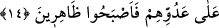

ALLAH’IN YARDIMCILARI
14. Ey îman edenler! Allah’ın yardımcıları olun. Nitekim Meryem oğlu İsâ
havârîlere: Allah’a (giden yolda) benim yardımcılarım kimdir? demişti. Havârîler
de: Allah (yolunun) yardımcıları biziz, demişlerdi. İsrailoğullarından bir zümre
inanmış, bir zümre de inkâr etmişti. Nihâyet biz inananları, düşmanlarına karşı
destekledik. Böylece üstün geldiler.
“Ey îman edenler! Allah’ın yardımcıları olun.” Yâni dininin yardımcıları olun.
“Nitekim Meryem oğlu İsâ havârîlere: Allah’a (giden yolda) benim yardımcılarım
kimdir? demişti.” Bazı tefsir âlimleri, yardımcıların varlığının bilinmesi ve onlarla
teselli bulunması için sorulan sorunun gerçekten istifham için olabileceğini veya
yardıma teşvik ve yönlendirmeğe de ihtimali olduğunu söylemişlerdir. Bu âyet-i
kerîme’de, Allah’tan başka herkesin muhtac olmaktan ve yardım istemekten
kurtulamayacağına, Allah yolunda olup vakti geldiğinde O’ndan yardım istemenin câiz
olduğuna işâret edilmektedir. Gelmekte olan âyetin ifâdesinin gerektirdiği gibi bu
kısmın mânâsı: Allah’ın yardımına yönelen askerlerim kimlerdir? şeklindedir.
“Havariler de Allah (yolunun) yardımcıları biziz, demişlerdi.” Âyet-i kerîme’de
geçen İsâ görünürde kendisine kimin yardım edebileceğini sormaktadır. Allah’a yardım
edeceklerini söyleyen havârilerin cevabına uygun değildir. Yine İsâ lafzını görünürdeki
mânâya almamız uygun değildir. O halde yardım edenlerin asker anlamına alınması
uygun olur. Çünkü, askerler hükümdarlarına işinde ve isteklerinin yerine gelmesinde
yardım ederler. Peygamberin (a.s.) maksadı ve arzusu Allah’ın dinine yardım etmektir.
Bu sebeple de bu konuda kendisine kimin uyacağını ve bu işte kendisine kimin ortaklık
ve yardım edeceğini sormaktadır. Mânâ şöyle olur: İsâ (a.s.), Allah’ın dini için bana
kim yardımcı olacak dediğinde, havarilerin kendisine yardım ettikleri gibi siz de
Allah’ın dinine yardımcı olun, demektir. Yahut ey Muhammed! İsâ’nın havârilere dediği
gibi sen de onlara: Allah’ın yardımcıları olun de!.. demektir.
Havariler, İsâ (a.s.)’ın gerçek saf ve samimî dostlarıdır. Havârîler, İsâ (a.s.)’a ilk
îman eden on iki adamdan ibâret idiler.
Mukâtil şöyle demiştir: Allah Teâlâ İsâ (a.s.)’a: Köye girdiğin zaman üzerinde